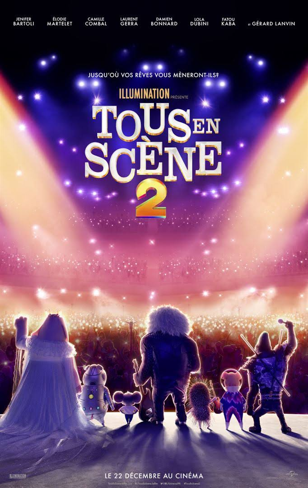

Tous en Scène 2
Si Buster et sa troupe ont fait du Nouveau Théâtre Moon la salle de concert à la mode, il est temps de voir les choses en plus grand : monter un nouveau spectacle dans la prestigieuse salle du théâtre de la Crystal Tower à Redshore City.
Flanqué de sa troupe — dont Rosita la mère de famille nombreuse constamment débordée, Ash la rockeuse porc-épique, Johnny le gorille romantique, Meena l’éléphante à la timidité maladive sans oublier l’incroyable Gunter, le cochon le plus extraverti de la profession — Buster va devoir trouver comment se frayer un chemin dans les bureaux inhospitaliers de la prestigieuse Crystal Entertainment Company et atteindre son directeur, le loup du show-biz : Jimmy Crystal, qui y règne en véritable nabab.
Dans un effort désespéré pour attirer l’attention de Jimmy, Gunter lance soudainement un pari fou que Buster relève sur le champ : la promesse de faire participer au spectacle le roi du rock, le lion Clay Calloway. Le problème est que… Buster n’a jamais rencontré Clay… surtout depuis que ce dernier s’est retiré de la scène 10 ans plus tôt, après avoir perdu sa femme. Mais pire que tout notre koala préféré ne se rend pas compte qu’il fait cette promesse à un escroc à l’égo surdimensionné qui préférerait défenestrer quelqu’un plutôt qu’on lui mente.
Tiraillé entre les rêves de spectacle dithyrambique de Gunter et les menaces quasi littérales de Jimmy Crystal, qui en profite pour remplacer le rôle principal tenu par Rosita par sa propre fille pourrie gâtée Porsha, Buster va se mettre à la recherche de l’idole du rock pour le persuader de revenir sur scène. Ce qui avait commencé comme une course au succès va finir par rappeler à tous que la musique est le remède ultime pour tous les cœurs, même les plus brisés.
Pas encore disponible